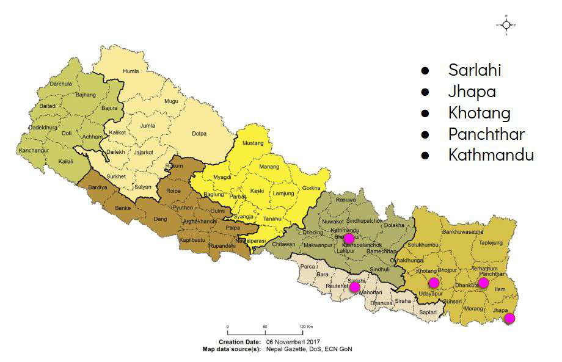

Nepal’s Biometric Present
Governance, Accessibility and Accountability
A field study of what happened when Nepal set out to enrol every resident biometrically — told through the people who queued, the officials who ran the stations, and the promises made along the way. Everyone enrolled gave up to do it.
Published by
Body & Data
Fieldwork
Sept 2022 – Nov 2024
Districts
Kathmandu · Sarlahi · Khotang
Reading time
{{ readTime }}
At a glance
The gap, in numbers
Enrolment moved fast. Cards did not. Everything else in this report sits inside that gap.
Enrolled vs. cards actually received
Government figures, November 2024. Each bar is drawn to scale.
10.1% of people enrolled were holding a card six years into the programme.2
Nearly one in ten distributed cards was rejected because the name, date or spelling was wrong.
{{ s.value }}
{{ s.label }}
{{ s.note }}
Key terms — hover, tap or tab to a term for its definition
Every one of these is also written out in full in the glossary.
The one-sentence finding
Nepal built a biometric identity system faster than it built the trust, the law, the infrastructure and the public understanding that such a system needs.
Executive summary
What the study found
In November 2018 the Government of Nepal launched the National ID (NID): a unique ten-digit number tied to a person’s fingerprints, iris scan and photograph, promised to every resident by 2023.1 Six years later most people had been enrolled, few had a card, and almost nobody could say what the card was for.
This study examines the social consequences and on-the-ground effects of the National ID. It explores three things: public understanding of the National ID, the political ambitions of the Nepali state attached to biometric projects, and users’ experiences of enrolling for a digital ID.
By late 2024, over 16 million citizens had been mandatorily enrolled. Distribution, which began in 2022, has recently gained momentum, with more than 1.5 million cards issued. While the NID serves as a tool of digital identification, it is not proof of citizenship and confers no citizenship rights — yet access to it is limited to residents who already hold a citizenship certificate. Millions of residents, particularly the landless, marginalised groups, and children of single mothers, are excluded from the digital system as a result.
The government is advancing a vision of “smart” governance without adequate investment in . Limited investment in digital foundations, technology adoption, data protection frameworks and efforts to bridge the digital divide have produced a weak DPI and poor public understanding. The administrative workforce was never systematically reoriented for digital transformation, so traditional practices continued.
For citizens, mandatory enrolment reads as one more form of ID and one more bureaucratic burden. For the government, identifying citizens without delivering meaningful services suggests a greater focus on surveillance and public security than on social security and inclusion.
{{ q.key }}
{{ q.text }}
Research areas
Where the research happened
Two districts were picked by how the government itself rated their enrolment performance — one “successful”, one “difficult” — plus the capital, where policy is made.11

How the study was done
365 people consulted — 45 individual interviews and 318 participants across nine focus group discussions — plus seven consultative meetings with CSOs, media, private-sector professionals and rights advocates.
NID timeline
Sixteen years of promises
From a line in a budget speech to a bank-account requirement. Filter the timeline to follow one thread at a time.
-
{{ t.date }}
{{ t.catLabel }}
{{ t.text }}
Chapter I
The birth of the National Identity Card
The card was approved before there was a law for it, contracted before there was a bidding process, and printed before Parliament had defined what it was. Each shortcut is still visible in how the system works today.
The concept of a national digital identity first appeared in government policy in July 2009, as part of a vision to move from paper to e-governance. The Cabinet approved a biometric “smart” card in 2010; the National ID Management Centre followed in July 2011. With Asian Development Bank support, a USD 14 million pilot was announced in 2012 for 110,000 citizens in Panchthar and 7,000 civil servants in Singha Durbar.
Between 2012 and 2015 the project made no progress. It was eventually realised that a new law was needed to anchor the programme. The 2015 Constitution gave the effort a footing: Article 51(f)(7) envisages an “integrated national identity management information system” to manage citizens’ information and link it to state services and development plans.3
In 2016 the contract went to the French company Morpho Safran — now Idemia — on the basis of a technical assessment alone, on the grounds that it was the only “technically eligible” bidder. Printing began in 2018. Only in 2019, after the opposition called the distribution “illegal”, did Parliament pass the National Identity Card and Civil Registration Act.4 In 2021 the same company received a further contract for 12 million cards, again without competitive procurement.
Promise vs. practice
On the left, what the Department of National ID and Civil Registration says the card will do. On the right, what this study found on the ground.10
{{ p.title }}
Stated promise
{{ p.promise }}
What we found
{{ p.reality }}
Chapter II
How the government is working
The NID is run as a highly centralised programme. Districts implement; municipalities facilitate; nobody local was consulted on the design. When something breaks, the people at the counter have no answer to give.
Local government units were not involved in planning, policy formation, or the assessment of digital-governance difficulties. Their knowledge of gaps in digital literacy and institutional capacity was largely overlooked. Officials received brief orientations on how to operate an enrolment station and collect data — not on what the NID would eventually be used for. As a result, local officials themselves could not explain the card’s digital purpose to the people in front of them.
The Chief District Officer in Sarlahi put the arrangement plainly: digital programmes are “decided and designed by the federal government”, and the role of provincial and local governments is “limited to implementing those programmes”. Feedback travelling the other way, officers said, is not taken seriously at the centre.
Who runs the system
Five bodies, one direction of travel: instructions go down, data comes up.
Walk through an enrolment
Six steps, as described by users and officers in Sarlahi and Khotang. Open each step to see where it breaks.
{{ j.title }}{{ j.sub }}
{{ j.friction }}
{{ j.evidence }}
Chapter III
Disputes and differences
A system built to include everyone is issued only to people who already hold a citizenship certificate — and its machines read some bodies better than others.
Under the National ID and Civil Registration Act, no official at any level may issue a National ID to a person without a citizenship certificate.5 Other documents — a driving licence, academic certificates, land papers — can support a record, but cannot replace the certificate. Because historic disputes have left millions without one, the digital system inherits every existing exclusion and adds new ones.
Enrolment was also driven by pressure rather than benefit. In November 2021 the NID number became compulsory for a passport — in a country with very high labour migration, an effective mandate.6 Enrolment surged; card distribution did not keep pace.
Who gets left out, and how
Six exclusion patterns documented in the field. These are mechanisms, not edge cases.
{{ e.tag }} {{ e.title }}
{{ e.body }}
Voices & experiences
In their own words
Interviews and focus groups, quoted as recorded. Filter by who is speaking.
{{ v.quote }}
Chapter IV
The right to privacy
Privacy is an inviolable right under Article 28 of the Constitution. Nepal still has no dedicated data protection law — and the biometric database of 16 million people was built without one.7
The government says the NID uses “global standard” security: AES-256 encryption, with personal data held on a secure chip in the card. But no comprehensive data governance framework has been published — no public protocols for ownership, access control, sharing or .8 Field research found gaps in technical capacity, training, transparency and institutional clarity.
Users, meanwhile, submitted biometric details simply because they were asked to. Most had never considered the risks of a breach; some were sceptical and “had a feeling” about data risks but “did not know how to put it into words”.
Where your data goes
Traced from the moment a fingerprint is captured. Each hop is a place where accountability is unclear.9
- {{ d.name }}{{ d.note }}
Security vs. privacy
Nepal’s legal framework recognises privacy but permits exceptions “in accordance with the law”. The Privacy Act 2018, the National Cyber Security Policy 2023 and the pending Social Network Bill 2025 all widen those exceptions — pushing citizens to trade privacy for security they cannot verify.
Way forward
Eighteen recommendations
Addressed to three audiences. Pick yours.
{{ r.title }}
{{ r.body }}
Notes & glossary
Sources and terms
Every numbered marker in the text links here, and every note links back to where you were reading. The tooltip is a shortcut, not the only route — the notes and definitions are part of the page.
Notes
- 1Department of National ID and Civil Registration, “About the National ID Card”, donidcr.gov.np — stated features, enrolment requirements and the 2018 launch in Panchthar and Singha Durbar.↩ back
- 2DoNIDCR progress figures to November 2024: 16.35 million enrolled, 1.65 million cards distributed, 161,113 cards rejected by users over errors in their information. By April 2025, 6.23 million cards printed and 2.31 million received.↩ back
- 3Constitution of Nepal, 2015, Article 51(f)(7); Article 15 provides for a record in which every citizen has a “clear” identity.↩ back
- 4National Identity Card and Civil Registration Act, passed August 2019; the legal foundation was formally issued on 28 Fagun 2076 (11 February 2020). Nepali Congress MPs Dilendra Prasad Badu and Amresh Kumar Singh challenged the procurement and the sequencing in Parliament.↩ back
- 5National ID and Civil Registration Act, Article 4. Related exclusions: Nepal Citizenship Act 2006, Section 8(1)(a), read against Constitution Article 11(2); the Nepal Citizenship First Amendment Act was cleared by the Supreme Court in June 2023, restoring access for roughly 1.2 million people with birthright citizenship.↩ back
- 6Ministry of Home Affairs notice, Nepal Gazette, June 2024, extended the requirement to bank accounts, SIM registration, social security allowances, Public Service Commission examinations and land and vehicle transactions. The Supreme Court suspended enforcement in July 2024 and nullified its own interim order in January 2025.↩ back
- 7Constitution of Nepal, Article 28; Privacy Act 2075 (approved September 2018); Individual Privacy Regulation 2077 (2020). The National Cyber Security Policy 2023 and the pending Social Network Bill 2025 widen the national-security exceptions rather than closing them.↩ back
- 8Field interviews at DoNIDCR, including a section officer responsible for data verification and the department’s IT director. Data is held on the Integrated Data Management System (IDMS) at the Government Data Centre, Singha Durbar, with backups at a disaster recovery centre in Hetauda.↩ back
- 9On the contractor: Twila Brase and Matt Flanders, “Exposing Idemia: The Push for National Biometric IDs in America”. Idemia — formerly Morpho Safran — holds Nepal’s NID contracts, awarded in 2016 and again in 2021 without competitive bidding.↩ back
- 10Stated goals compiled from the DoNIDCR website and public statements by government representatives, including the department’s slogan, mission and listed features, and its published list of proposed multipurpose uses.↩ back
- 11This study builds on Body & Data’s earlier research into the pilot phase of the identification project, published in 2023. Nepal’s Digital ID framework is modelled on the World Bank’s Digital Identification for Development (D4D) approach.↩ back
Glossary
Definitions as the report sets them, drawn from the GDPR, academia, cybersecurity practitioners and civil society organisations.
- Biometric data
- Personal data capturing a person’s physical, physiological or behavioural characteristics through technological processing, used to confirm their unique identity — fingerprints, iris patterns, facial images, voice.
- Digital identity (Digital ID)
- An online representation of a person, built from data they provide and data collected through their actions.
- Digital public infrastructure (DPI)
- Foundational digital systems — identification, payments, data sharing — that other digital services are built on.
- Interoperability
- The ability of separate systems to exchange and use each other’s data — here, one identity record reaching across immigration, banking, revenue and telecoms.
- Unique Identification Number (UIN)
- A number assigned to a person that identifies them and links their identity across public and private databases, for use throughout their lifetime.
- Datafication
- Turning aspects of life into quantifiable data that can be stored and analysed — including location history, social media activity and biometric details.
- Sensitive data
- Personal data demanding enhanced protection: ethnicity, political opinion, religious belief, union membership, genetic and biometric details.
- Profiling
- Automated processing of personal data to evaluate or predict aspects of a person’s life — health, reliability, behaviour, location.
- Digital literacy
- Understanding how digital technology works and using it effectively, including awareness of privacy, cybersecurity, consent and data breaches.
- Social exclusion
- Denial of access to essential resources, rights, services and opportunities, and exclusion from full participation in public life.
- Aadhaar
- India’s twelve-digit identity number issued by the UIDAI. Voluntary, and proof of identity rather than of citizenship.
- Data breach
- An incident in which information is accessed or stolen from a system without the owner’s knowledge or authorisation, exposing confidential or protected data.
About
The study and the people behind it
Body & Data
Established in 2017, Body & Data works to enhance understanding of and access to information on digital rights among women, queer people and marginalised groups in Nepal.
Research contribution
Bhaskar Gautam, Dovan Rai, Rita Baramu, Sapana Sanjeevani, Nuva Rai, Monika. Research assistants: Irshat Khatoon (Malangwa, Sarlahi) and Barsha Rai (Diktel, Khotang).
Credits
Copy-editing: Shafali Uprety. Cover illustration: Supriya Manandhar. Layout and design: Shrijit Rajbhandari. Financial support: Open Society Foundation.
Cite this report
Body & Data (2025). Nepal’s Biometric Present: Governance, Accessibility and Accountability. Kathmandu: Body & Data.
All figures and quotations on this page are drawn from the report. Interview quotations are reproduced as recorded and attributed by role and district to protect participants’ identities.